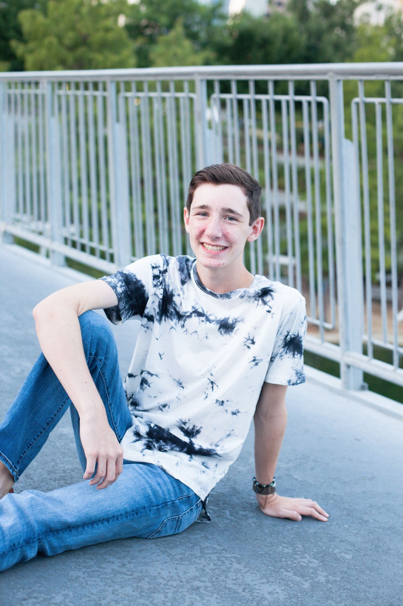
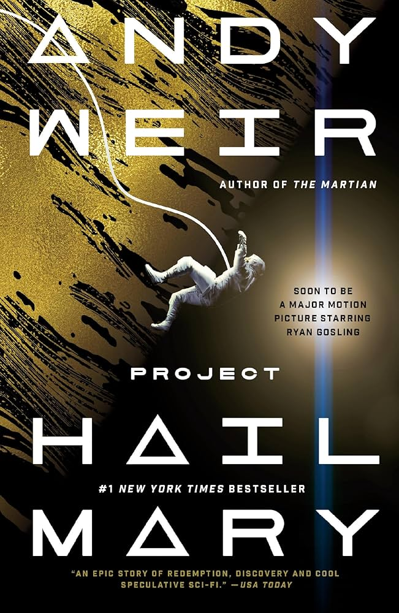
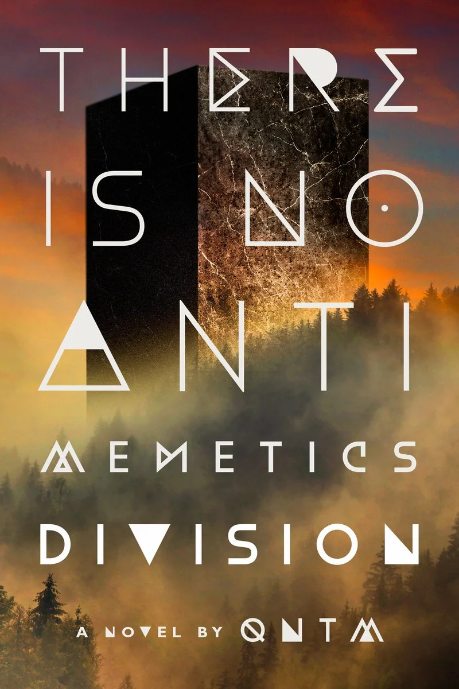

Hello!
I'm Austin, a versatile multipassionate pursuing a BS in Electrical Engineering at Georgia Tech. I consider myself a life-long learner motivated by a desire to understand, inspire, and assist.
The universe is vast, complex, and endlessly intriguing, and I am eager to explore and innovate wherever I can.

Skills & Passions
Programming
Accustomed to Java, Python, C#, and C++ with 4 years of beginner-to-intermediate programming experience. These skills were developed both independently and via curricula in high school and a specialized CS academy.
Electronics
Familiar with basic bread-boarding, microcontroller implementation, and circuit design. This is the foremost skill I seek to develop through internships and GT courses, with an emphasis on collaborative projects.
Web Development
Independently picked up HTML5 and CSS3 for personal and professional use. Developing new skills in JavaScript & UI design. I aim to use these skills to cultivate clear communication, and serve as a medium between other domains.
Game Development
Proficient in Godot and Unity as well as managing source control via Git. I believe that video games empower a specific and unrivaled form of interactive media that serves diverse roles, from immersive story-telling to cooperative problem-solving.
Tabletop Roleplaying
"TTRPGs" have become a positive facet of my life. Collaborative and unbounded, these games encourage creative problem solving and foster lasting social connections. They also develop experience in managing complex schedules.
Music Production
Confident in utilizing DAWs such as FL Studio to implement virtual synthesizers, filters, and effects in original compositions. This represents a crucial creative outlet that harmonizes with my professional aspirations.
Background
“I’m being quoted to introduce something but I have no idea what it is and certainly don’t endorse it”
Randall Munroe
Raised in Edmond Oklahoma, I grew up a very imaginative kid. In my elementary school free-time, I often wrote comics, made up board games, fell off bikes, and asked many unorthodox questions. I learned a whole lot during this time, particularly how to read and count and tie my shoes etc. etc. but the most defining thing I found was that making stuff is fun! Even though it was hard sometimes to make something I liked, it was nice to look back after the fact and appreciate the work I did.
Moving on, the Covid-19 pandemic impacted my transition between middle and high school, bringing difficulty to my academic and social experiences. However, the lockdown also granted me a generous amount of free time and, in teenage restlessness, I spent it trying out way too many hobbies way too fast. Notable among these were music, world building, and video game design, each laying the groundwork for many of my future passions. My most important take away from these experiences was the idea of managing free time effectively, I wouldn't be able to pursue these hobbies if I delegated all of my time to consuming existing media, I have to make time to make stuff myself.
High school was a period spent regenerating the academic and social ability degraded from Covid as well as pushing myself way out of my comfort zone. I joined the marching band drumline, challenged myself with AP curricula, and competed in technology-oriented student competitions. Additionally, I applied for and attended Francis Tuttle Technology Center’s Computer Science Academy, a neat co-curricular opportunity in which I took my stem classes at a separate campus from my main high school. The two biggest things I learned in high school, excepting course work, were the importance of making lasting connections and managing the balance associated with rigor and personal ventures.
In 2025 I was accepted into Georgia Tech for bachelors in Electrical Engineering and since then I have been busy studying, collaborating, and trying yet more new things. I think that, at heart, I am still that imaginative kid, but now I’ve got a more learnèd brain, directed passions, friends, and pivotal experiences to guide me forward. I am looking forward to expanding my repertoire in all of these facets in the future!
Favorite Books



Goals
- Gain Experience in Signal Processing
- Gain Experience in Energy Systems
- Develop New Viewpoints
- Make a Positive Impact
Signals have fascinated me long before I ever knew what they were. As I further develop my audio design skills, I aim to deepen my understanding of how signals behave and how they can be manipulated. Be it in audio/visual and other domains, I want to be able to apply these skills in real-world applications, so pursuing internships and research opportunities in this field is a priority for me.
As my second thread choice in my EE bachelor's degree, Energy Systems serves as my auxiliary professional focus. As I take more courses in this area, I want to gain practical experience in the field through internships and student organization involvement, with an emphasis on sustainable and renewable energy.
As I continue to grow and learn, I aim to broaden my perspective and approach problems from many different angles. I want to get to know people with diverse backgrounds and experiences, challenge my own assumptions, and advance my interpersonal skills.
What I want most is to make people's lives better, be it through technological innovation or creative inspiration. I believe that by loving what you do, you can pass that feeling on to those around you. To this end, I am interested in opportunities to contribute to helping others or improving society.